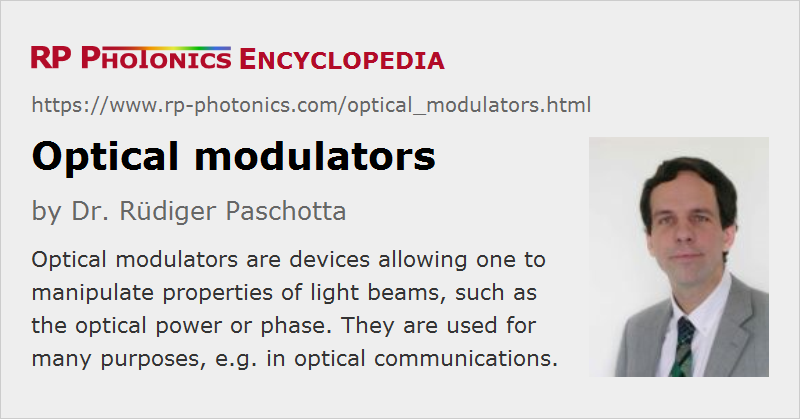

Optical Modulators
Definition: devices allowing one to manipulate properties of light beams, such as the optical power or phase
More specific terms: acousto-optic modulators, electro-optic modulators, Pockels cells, electroabsorption modulators, liquid crystal modulators, intensity modulators, phase modulators
German: optische Modulatoren
Categories: photonic devices, lightwave communications
How to cite the article; suggest additional literature
Author: Dr. Rüdiger Paschotta
An optical modulator is a device which can be used for manipulating a property of light – often of an optical beam, e.g. a laser beam. Depending on which property of light is controlled, modulators are called intensity modulators, phase modulators, polarization modulators, spatial light modulators, etc. A wide range of optical modulators are used in very different application areas, such as in optical fiber communications, displays, for active Q switching or mode locking of lasers, and in optical metrology.
Types of Optical Modulators
There are very different kinds of optical modulators:
- Acousto-optic modulators are based on the acousto-optic effect. They are used for switching or continuously adjusting the amplitude of a laser beam, for shifting its optical frequency, or its spatial direction.
- Electro-optic modulators exploit the electro-optic effect in a Pockels cell. They can be used for modifying the polarization, phase or power of a beam, or for pulse picking in the context of ultrashort pulse amplifiers.
- Electroabsorption modulators are intensity modulators, used e.g. for data transmitters in optical fiber communications.
- Interferometric modulators, e.g. Mach–Zehnder modulators, are often realized in photonic integrated circuits for optical data transmission.
- Fiber-optic modulators can exploit various physical principles. They can be true fiber devices, or contain fiber pig-tailed bulk components.
- Liquid crystal modulators are suitable for, e.g., optical displays and ultrafast pulse shapers. They are also available as spatial light modulators, i.e. with a spatially varying transmission, e.g. for displays.
- Chopper wheels can periodically switch the optical power of a light beam, as required for certain optical measurements (e.g. those using a lock-in amplifier). Of course, that kind of device cannot provide arbitrary modulation controlled with an electrical input signal.
- Micromechanical modulators (which are microelectromechanical systems = MEMS), e.g. silicon-based light valves and two-dimensional mirror arrays, are particularly useful for projection displays.
Bulk-optical modulators, e.g. of the electro-optic type, can be used with large beam areas, and handle correspondingly large optical powers. On the other hand, there are fiber-coupled modulators, often realized as a waveguide modulator with fiber pigtails, which can easily be integrated into fiber-optic systems.
Suppliers
The RP Photonics Buyer's Guide contains 61 suppliers for optical modulators. Among them:
Questions and Comments from Users
Here you can submit questions and comments. As far as they get accepted by the author, they will appear above this paragraph together with the author’s answer. The author will decide on acceptance based on certain criteria. Essentially, the issue must be of sufficiently broad interest.
Please do not enter personal data here; we would otherwise delete it soon. (See also our privacy declaration.) If you wish to receive personal feedback or consultancy from the author, please contact him e.g. via e-mail.
By submitting the information, you give your consent to the potential publication of your inputs on our website according to our rules. (If you later retract your consent, we will delete those inputs.) As your inputs are first reviewed by the author, they may be published with some delay.
See also: intensity modulators, phase modulators, acousto-optic modulators, electro-optic modulators, electroabsorption modulators, liquid crystal modulators, Pockels cells, Pockels cell drivers, optical choppers
and other articles in the categories photonic devices, lightwave communications
|  |
If you like this page, please share the link with your friends and colleagues, e.g. via social media:
These sharing buttons are implemented in a privacy-friendly way!